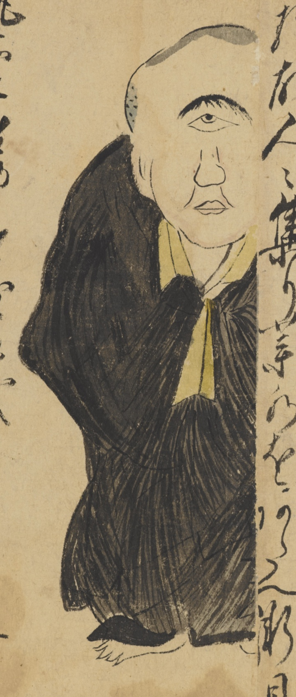

← 图鉴索引

一つ目の僧侶。黒衣。足の指は四本。
著作者：長岡多門／出典：親書誌：U426_nichibunken_0448：諸国妖怪図巻／日付：2019／資源識別子：U426_nichibunken_0448_0001_0003
Copyright (c)2010- International Research Center for Japanese Studies, Kyoto, Japan. All rights reserved.